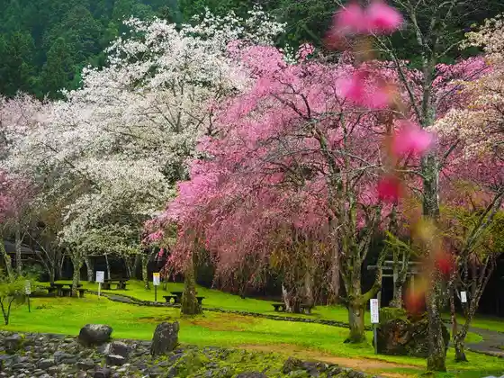
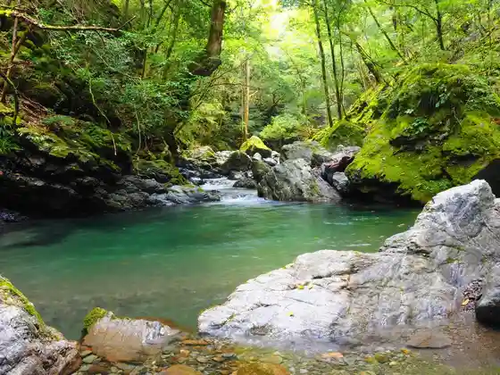
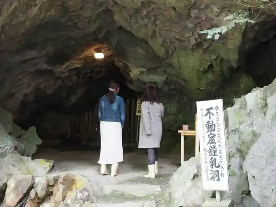
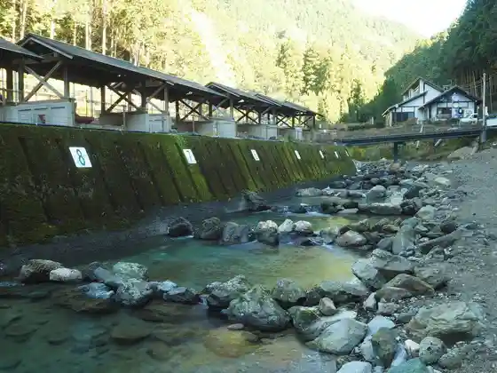

Akitsu no Ono Supotsu Park
Kawakami, Nara · 0746-53-2855 · Official / source link
Akitsu no Ono Park
Kawakami, Nara · 0746-52-0333 · Official / source link

San Yuki Ko Tennenrin
Kawakami, Nara · 0746-52-0888 · Official / source link

Fudo Kutsu Limestone Cave
Kawakami, Nara · 0746-47-2388 · Official / source link

Nakai Keikoku Shizen Juku
Kawakami, Nara · 0746-53-2441 · Official / source link

Tanjo Kawakami Shrine Kamiyashiro
Kawakami, Nara · 0746-52-0733 · Official / source link
I Hikari Shrine
Kawakami, Nara · Official / source link
I Kori Shika Village · Morimori Kan
Kawakami, Nara · 0746-54-0223 · Official / source link
Takumi no Ju
Kawakami, Nara · 0746-53-2381 · Official / source link
Dai Tenjo Taki
Kawakami, Nara · 0746-52-0111 · Official / source link
Otaki Dam Manabe Ru Bosai Suteshon
Kawakami, Nara · 0746-53-2372 · Official / source link
Kawakami Sogo Center Yamabuki Horu
Kawakami, Nara · 0746-52-0144 · Official / source link
Mifune Falls
Kawakami, Nara · 0746-52-0333 · Official / source link
Kijigamori Gorge
Kawakami, Nara · Official / source link
Mori to Mizu no Genryu Kan
Kawakami, Nara · 0746-52-0888 · Official / source link
Rekishi no Shonin
Kawakami, Nara · 0746-52-0333 · Official / source link
Karasugawa Shrine
Kawakami, Nara · 0746-52-0111 · Official / source link
Biwa Falls
Kawakami, Nara · 0746-52-0333 · Official / source link
Shiro Ya Gaku
Kawakami, Nara · 0746-52-0333 · Official / source link
Shirakawa Watari Oto Campground
Kawakami, Nara · 0746-54-1700 · Official / source link
Shirahige Gaku
Kawakami, Nara · 0746-52-0333 · Official / source link
Fuku Gen Tera
Kawakami, Nara · 0746-52-0104 · Official / source link
Tombo Falls
Kawakami, Nara · 0746-52-0111 · Official / source link
Un Kawa Tera
Kawakami, Nara · 0746-53-2132 · Official / source link
Roadside Station Sugi Baths Kawakami
Kawakami, Nara · 0746-52-0006 · Official / source link
Kongoji (Kawakami)
Kawakami, Nara · Official / source link